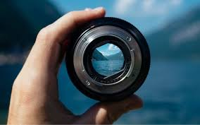

Книги бывают разными: одни увлекают нас захватывающими сюжетами, другие заставляют задуматься над глубокими философскими вопросами, третьи дарят практические знания и навыки. Независимо от жанра, каждая книга оставляет свой след в нашей душе. Она может стать советчиком в трудную минуту, источником вдохновения или просто способом отдохнуть от повседневной суеты.
В современном мире, где технологии и цифровые устройства занимают всё больше места, книга остаётся уникальным инструментом для развития воображения и критического мышления. Чтение требует сосредоточенности и погружения, что помогает нам отвлечься от бесконечного потока информации и найти время для себя.
